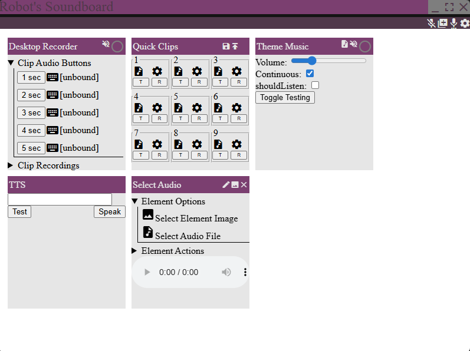

--
--
--

Ping Social
Social media website prototype based on Twitter.
Created using NodeJS, MongoDB, SocketIO
Google oAuth for logins
Features: Realtime Notifications, Online Status Tracking, Team Accounts
See Full Project Details

Soundboard
Prototype web app that acts as a soundboard
Created using NodeJS, Voicemeeter
Features: Playing audio through virtual microphone, Recording desktop audio using circular queue, Adding downloaded audio to soundboard
See Full Project Details